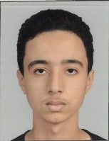

Ziad Lougdari

Summary
Motivated and detail-oriented Computer Science student specializing
in Software Development. Passionate about programming, web development,
and desktop application development. Eager to apply technical skills
and continue learning through internships and real-world projects.
Education
- DTS in Développement Informatique
- IFIAG, Morocco
- 2025 - Present
- Baccalaureate
- Jaafar Fassi Fihri High School
- Year of Graduation: 2025
Work Experience
- Academic Projects
- IFIAG
- 2025 - Present
- Developed Python applications using functions, dictionaries, and file handling.
- Built responsive websites using HTML, CSS, and JavaScript.
- Created desktop applications in C# Windows Forms.
- Used Git and GitHub for version control.
- Skills
- Python
- C#
- Java
- HTML
- CSS
- JavaScript
Awards, Certifications, or Other Achievements
- Completed programming projects in Python and C#.
- Built personal portfolio and web development projects.
- Experience using Git and GitHub for source code management.
Others